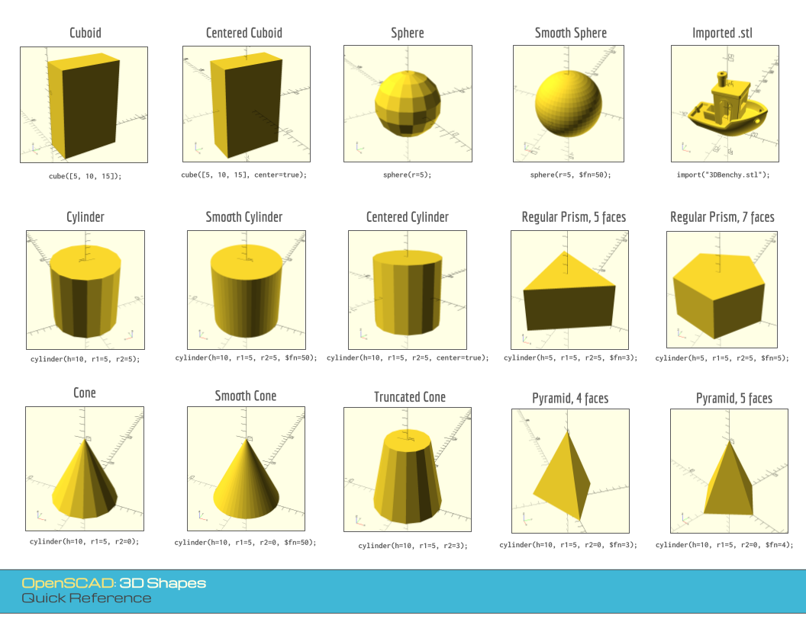

menu
Companion Teaching Resources
Visual Quick Reference
Code Solutions
Programming with OpenSCAD
Companion Teaching Resources
Visual Quick Reference
Code Solutions
Visual Quick Reference
3D Shapes
2D Shapes

Transforming Shapes
Loops and Lists
3D Printing Pipeline